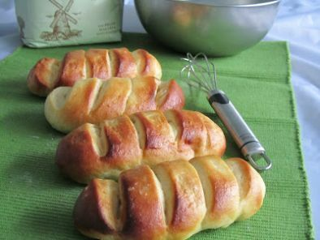

Welcome to Recetas De Bollos
Recetas de Bollos - 76 recetas
2021.06.18 21:41Descubre Aperitivos y tapas Arroces y cereales Aves y caza Carne Cócteles y bebidas Consejos de cocina Ensaladas Guisos y Potajes Huevos y lácteos Legumbres Mariscos Pan y bollería Pasta Pescado Postres Salsas Sopas y cremas Verduras Recetas Pan y bollería Bollos
Recetas de Bollos
(76) Un bollo puede ser largo y delgado, corto y redondo y con formas y tamaños diferentes. Es un alimento generalmente consumido en desayunos y meriendas. Un bollo es una pieza de repostería (normalmente dulce), generalmente horneada en porciones individuales. Los bollos se hacen con diversos tipos de masa de harina y pueden tener relleno o no. Algunos se asemejan a panecillos dulces, similares a los panecillos alemanes. Filtrar resultados Filtrar por: Dificultad Muy baja 1 Baja 42 Media 21 Alta 5 Para Postre 22 Merienda 15 Desayuno 8 Entrante 4 Acompañamiento 3 Plato principal 1 Categoría Pan y bollería 76 Bizcochos 626 Galletas 433 Pan 340 Cupcakes 204 Bollería 131 Bollos 76 Hojaldre dulce 57 Roscos 56 Torrijas 33 Duración 10m 3 15m 6 30m 18 45m 15 1h 30m 13 2h 30m 3 3h 3 6h 2 24h 2 Propiedades Sin gluten 1 Sin lactosa 6 Sin azúcar 1 Sin sal 1 Alimentación Vegetarianos 3 Veganos 4 Perder peso 1 Cocción Frito 30 Al horno 16 Plancha 5 Thermomix 5 Sin cocción 1 Temporada Semana Santa 8 Otoño-Invierno 7 Navidad 4 Pascua 2 Otras fiestas 1 País España 12 México 7 Chile 4 Argentina 3 Suecia 3 Francia 2 Japón 2 Alemania 1 Bolivia 1 Colombia 1 Región Asturias 2 País Vasco 1 Coste Barato 56 Medio 9 Bebida Zumo natural 3 Vino blanco 1 Vino tinto 1 Dificultad muy baja Receta de Tortilla wrap hack Dificultad muy baja 1 10m Plato principal Te enseñamos a preparar esta popular tortilla en el mundo de las redes sociales. El tortilla wrap hack se hizo viral en Tik Tok y, desde entonces, han aparecido muchas versiones del mismo plato. ¿A qué se debe su popularidad? Creemos que se debe a lo versátil que es, pues puedes hacer muchas combinaciones Dificultad baja Receta de Tortitas negras integrales Dificultad baja 3 6h Merienda Esta clásica factura que conseguimos en cualquier panadería de Argentina se trata de una masa cubierta con azúcar negra. Su origen se remonta a la creatividad de los panaderos argentinos para aprovechar la masa sobrante de la elaboración del pan. Es tan popular en Argentina, que tiene una fiesta a su Dificultad baja Receta de Bollitos de queso Dificultad baja 4 1h 30m Acompañamiento Hay miles de recetas y trucos para hacer pan. Partiendo de una masa sencilla de agua, harina, aceite y sal, se pueden elaborar infinidad de variaciones. En RecetasGratis os proponemos la receta de bollitos de queso, una merienda fácil y deliciosa o el acompañamiento ideal para tus comidas. A diferencia Dificultad media Receta de Brioche de mascarpone Dificultad media 6 2h 30m Desayuno El brioche, también conocido como suizo, es una especie de bollo semi dulce muy tierno y con un sabor único, tanto por su aroma como por su vistosa apariencia. En esta oportunidad, en RecetasGratis hemos preparado una receta de brioche de mascarpone en la que sustituiremos la mantequilla por queso mascarpone. Este Dificultad media Receta de Buñuelos de chocolate Dificultad media 4 1h 30m Postre En esta ocasión, compartimos una deliciosa receta de buñuelos de chocolate. Durante la época de cuaresma es muy habitual encontrar en todas las panaderías y pastelerías buñuelos, torrijas, pestiños y muchos otros dulces tradicionales de Semana Santa. Sin embargo, su coste puede resultar elevado y, por Dificultad baja Receta de Buñuelos de cuaresma Dificultad baja 4 1h 30m Postre Los buñuelos de cuaresma son similares a losbuñuelos de viento, sin embargo, no son iguales. La masa de los buñuelos de cuaresma está enriquecida con granos de anís y vino blanco dulce, ingredientes que le dan ese sabor tan característico. Como su propio nombre indica, son típicos para la época de cuaresma Dificultad baja Receta de Buñuelos de naranja Dificultad baja 8 1h 30m Postre Los buñuelos son unos dulces fritos muy extendidos en la cocina mediterránea. Aunque los más conocidos son los buñuelos de viento, hoy en día podemos encontrar recetas de buñuelos que incluyen frutas y verduras como la calabaza, el calabacín, la zanahoria y también la naranja, entre otros, tanto en versiones Dificultad baja Receta de Buñuelos de viento sin gluten Dificultad baja 6 45m Desayuno Los buñuelos de viento son un dulce de lo más tradicional, incluso compiten con los famosos churros en popularidad. Tradicionalmente, se hacían para la festividad de Todos los Santos, de ahí pasó a consumirse también en Semana Santa y, afortunadamente, hoy en día se toman en cualquier época del año, ya Dificultad media Receta de Mona de pascua Dificultad media 4 24h Merienda Las monas de pascua son una especie de bollo o pan quemado muy típico de la repostería española. Típicamente, llevan un huevo cocido en la cima de este riquísimo dulce, pero también puedes usar huevos u otras figuras hechas de chocolate para acompañarlas. Aunque la elaboración es algo extensa, el resultado Dificultad baja Receta de Buñuelos de viento caseros Dificultad baja 4 30m La receta de buñuelos de viento se elabora tradicionalmente por Carnaval, Semana Santa y el Día de Todos los Santos. Los buñuelos de viento son bolitas que están elaboradas con una masa de harina, huevos y leche, que al freírlas se hinchan y por eso se las llama de viento . Este dulce es muy sencillo Dificultad baja Receta de Pastelitos de arroz Dificultad baja 6 45m Postre No te pierdas estos exquisitos y dulces pastelitos de arroz de Bilbao que compartimos en RecetasGratis. Se trata de un postre típico vasco que se prepara desde hace siglos, pero curiosamente ahora no lleva nada de arroz aunque se cree que antiguamente estaban rellenos de una mezcla de arroz con leche y Dificultad media Receta de Bollos de canela y pasas Dificultad media 12 3h Los bollos de canela, azúcar y pasas son ideales para la merienda, el desayuno o el postre, acompañados con un batido de chocolate, de vainilla, de avena.. Hacerlos es más fácil de lo que parece y el resultado es increíble, ya que como los bollos caseros ningunos. Sigue leyendo y aprende en RecetasGratis Dificultad baja Receta de Dorayakis caseros de chocolate Dificultad baja 4 30m ¿Cuántas veces has visto el famoso dorayaki de Doraemon? Si te preguntas cómo hacer dorayakis caseros, ¡has llegado al lugar adecuado! En RecetasGratis aprenderás a preparar unos deliciosos dorayakis de chocolate al más puro estilo japonés. Además, lo mejor de todo es que se trata de una receta muy fácil y rápida, Dificultad baja Receta de Dorayakis veganos Dificultad baja 2 30m Postre Dorayaki es un dulce japonés que consiste en dos bizcochos de forma redonda rellenos de judías dulces llamado anko. Actualmente los dorayakis se rellenan de también de fruta troceada, dulce de castañas, té verde matcha, mermelada o chocolate. Los dorayakis que se han vuelto conocidos mundialmente después Dificultad baja Receta de Bizcocho de limón sin yogur Dificultad baja 6 45m Merienda ¿A quién no le gusta disfrutar de un buen bizcocho casero? ¡A nosotros nos encanta preparar tortas variadas! Por ello, en esta ocasión hemos elaborado un sencillo pero sabroso bizcocho de limón sin yogur ni leche y, por tanto, ¡sin lactosa! De esta forma, los intolerantes a la proteína de la leche podrán Dificultad baja Receta de Buñuelos caseros y sencillos sin leche Dificultad baja 30 30m Postre Los buñuelos de viento son tradicionales, sobre todo, de la época de Cuaresma y Semana Santa. Actualmente existe una infinidad de recetas para elaborarlos, aunque la preparación original se hace a partir de: huevos, harina, mantequilla, azúcar y leche. Sin embargo, muchos son los intolerantes a la lactosa Dificultad baja Receta de Buñuelos de manzana veganos Dificultad baja 4 30m Postre Triunfa en cualquier festividad preparando estos deliciosos buñuelos de manzana veganos para todos tus invitados, ya sea Semana Santa, Pascua o Navidad. Para todas aquellas personas que siguen una dieta libre de productos de origen animal, a veces es difícil poder encontrar postres caseros que poder Dificultad media Receta de Calzones rotos con levadura Dificultad media 4 30m Postre Los calzoncillo o calzones rotos crujientes son un postre o dulce típico de Chile muy sencillos y rápidos de hacer ya que, en tan solo 30 minutos, podrás tenerlos preparados y listo para degustar con un mate o un té bien caliente ¡Ideales para tomar en días lluviosos o en épocas de invierno para entrar Especial Navidad Receta de Tortas de mosto de Moratalla Dificultad baja Especial Navidad 4 10m Cada comunidad autónoma, tiene su propia gastronomía y repostería. En Murcia somos muy afortunados porque tenemos los mejores dulces del mundo, bueno en mi opinión. Cuando se acercan las navidades cada año me cuesta más encontrar dulces nuevos que no tenga ya publicados en mi blog La Cocina de Catina. El Dificultad baja Receta de Gorditas de harina dulces con mantequilla Dificultad baja 10 30m Postre En México, las gorditas de harina dulces son un postre muy popular por su suave sabor, tanto es así que podemos encontrarlas en pequeños puestos situados alrededor de todo el centro histórico de la capital del país. Por otro lado, al estar cocinado a la plancha, podríamos decir que se trata de un postre Dificultad baja Receta de Panecillos suecos Dificultad baja 4 2h 30m Acompañamiento Estos panecillos suecos, son increíblemente tiernos, y lo estarán aún al día siguiente. Son ideales para hacer pequeños bocadillos o para tomarlos en el desayuno con mantequilla y todo lo que se os ocurra introducir en el interior, ya sea dulce o salado. A mí me tienen enamorada, y los suelo hacer a menudo Dificultad baja Receta de Rollos de canela con pan Bimbo Dificultad baja 5 15m Postre ¿Tienes antojo de un postre diferente, fácil, económico y además de todo delicioso? ¿Qué te parecen unos exquisitos rollitos de canela? Son un postre o merienda perfecto para estos días de frío, además de que podemos acompañarlos con cualquiera de las deliciosas bebidas calientes que existen. Bueno, Dificultad baja Receta de Buñuelos de rodilla Dificultad baja 8 45m Postre Los buñuelos son uno de los postres más tradicionales de la gastronomía mexicana. Se caracterizan por ser una especie de tortilla hecha a base de harina la cual se fríe, obteniendo así una crujiente tostada, a la cual se le agrega miel de maple o miel de piloncillo y azúcar para darle un rico sabor dulce. Si Dificultad baja Receta de Buñuelos de moka Dificultad baja 6 45m Merienda No hay duda: estamos obsesionados con los buñuelos de viento. Pero es que están tan ricos que no nos cansamos de comer buñuelos caseros. Suaves, livianos y además con relleno más allá de las típicas cremas. Y el de hoy seguro que también os va a sorprender. Desde RecetasGratis os animamos a probar a rellenar Dificultad media Receta de Buñuelos de nata Dificultad media 8 1h 30m Postre Si hay un postre típico en la gastronomía española este es el buñuelo, un bollito liviano con mucho aire dentro; de ahí que se denomine a esta elaboración buñuelos de viento. Y nosotros vamos a darles aún más sabor. Hoy en RecetasGratis os presentamos unos deliciosos buñuelos rellenos de nata. Estos buñuelos, Dificultad baja Receta de Buñuelos dulces fritos Dificultad baja 10 15m Merienda Por fin tenemos la receta clásica de buñuelos para que disfrutes con un desayuno dulce o una merienda en familia. En RecetasGratis te ayudamos a convertirte en un gran cocinero y ya verás que con esta receta de buñuelos dulces fritos triunfarás. La masa para buñuelos fritos es muy sencilla de hacer, pero Dificultad baja Receta de Buñuelos fáciles y ricos Dificultad baja 7 45m Postre Estos son unos buñuelos caseros fáciles y simples. Preparé muchas recetas de buñuelos pero la verdad nunca terminaban de convencerme, hasta que dí con esta receta fácil de buñuelos, es lo que estaba buscando .nunca salen mal, nada de preparar la masa a ojo, es exacta por eso no falla nunca. Anímate Dificultad alta Receta de Brioche de chocolate Dificultad alta 6 6h Desayuno El pan de chocolate es un auténtico manjar y en RecetasGratis.net hemos preparado uno para compartirlo con todos vosotros. Este brioche de chocolate que os mostramos debe elaborarse paso a paso, cumpliendo los tiempos de amasado y fermentación que os indicamos. ¡Tened paciencia y conseguiréis un auténtico brioche Dificultad baja Receta de Bizcochitos de crema y harina Dificultad baja 2 30m Merienda Bizcochitos livianos, suaves y fáciles de hacer. Sin duda, estos bollitos de crema de leche y harina te sorprenderán y encantarán cuando los pruebes. Además, solo requiere de estos dos ingredientes y una pizca de sal, por lo que se trata de una opción muy económica, al alcance de todos los bolsillos. Dificultad baja Receta de Dorayakis Dificultad baja 2 15m Merienda Los dorayakis son unos postres japoneses fáciles de realizar. Consisten en dos bizcochos esponjosos rellenos, por lo general de chocolate, en este caso los rellenamos con Nutella, se preparan con harina de trigo, huevo y azúcar. No te pierdas el paso a paso que en RecetasGratis.net te detallamos y aprende Dificultad media Receta de Semlor Dificultad media 4 2h 30m Postre El semlor o semla es uno de los bollos más típicos de Suecia, Finlandia y Estonia. En especial durante la época de Cuaresma es costumbre encontrar estos exquisitos bollos suecos en todos los hogares y pastelerías, pues es tradición prepararlos el martes de Carnaval. A pesar de su popularidad y antigüedad, Dificultad media Receta de Gorditas de nata estilo Tlaxcala Dificultad media 5 1h 30m Postre Las gorditas de nata son un tipo de pan elaborado con nata de leche y que es común encontrar en las ferias de nuestro país. Este tradicional pan dulce tiene su origen en el Estado de Tlaxcala, México. En RecetasGratis.net te enseñamos cómo hacer este y muchos más platillos tradicionales mexicanos. Sigue Dificultad alta Receta de Calzones rotos al horno Dificultad alta 6 1h 30m Merienda En esta receta traemos una opción típica de la gastronomía chilena, una preparación diseñada para épocas de invierno y días lluviosos, para quedarse en casa y disfrutar de un té o mate con unos delicioso calzones rotos. Entonces, veamos los ingredientes de la receta y el paso a paso que en RecetasGratis.net Dificultad media Receta de Sopaipillas con zapallo Dificultad media 4 45m Merienda Vamos a realizar una receta típica chilena de sopaipillas con zapallo, ideal para un día de lluvia para acompañar con un té o café con leche. Quédate en RecetasGratis.net y aprende a preparar de forma fácil sopaipillas chilenas. Dificultad alta Receta de Bollos preñaos Dificultad alta 6 1h 30m Entrante Esta es una receta típica española que consiste en un pan relleno en el centro con un trozo de chorizo. Por lo general se rellena con chorizo de Asturias, no obstante, como realmente me fue difícil en mi país de origen conseguir esta clase de chorizo, lo sustituí por otro siguiendo los pasos originales Especial Navidad Receta de Buñuelos mexicanos Dificultad media Especial Navidad 6 3h Postre Hacer buñuelos es una de las tradiciones más antiguas de las fiestas patrias y decembrinas en México. Este postre típico mexicano hecho de harina de trigo se fríe en abundante aceite y se acompaña con miel de piloncillo aromatizada con canela y clavo. ¿Quieres saber cómo hacer buñuelos mexicanos? Sigue el Dificultad media Receta de Beignets Dificultad media 5 1h 30m Merienda Los beignets son unas tortas fritas francesas, crocantes y húmedas por dentro que se sirven bañadas en azúcar glass. También conocidos como buñuelos franceses, estas pastas dulces son perfectas para la merienda o para sorprender a los más pequeños. Dificultad media Receta de Brioche de nata Dificultad media 10 24h Siempre tengo mantequilla y nata para montar en casa por si me apetece hacer algo, aunque la guardo lejos de la cocina para no caer en la tentación muy a menudo. Los sábados y domingos es cuando me dedico a amasar y hornear para toda la semana. Hace algunos sábados me apetecía preparar brioches pero no me quedaba Dificultad media Receta de Buñuelos de Pascua Dificultad media 4 1h 30m Merienda La época de Semana Santa y Pascua, además de las sus muchas celebraciones religiosas, se caracteriza por ser una época donde la cocina toma protagonismo y sobre todo el tema de dulces y postres. Con esta receta aprenderás cómo hacer los famosos buñuelos de Pascua, unos bollos dulces hechos con harina, Dificultad baja Receta de Crumpets fáciles Dificultad baja 20 45m Desayuno Los crumpets son originarios de Escocia y tienen un aspecto muy similar al de los blinis. Existen varias formas de prepararlos, algunos aseguran que la receta original se hace sin levadura, mientras que otros opinan todo lo contrario. Lo que sí es seguro es que todos ellos deben contar con los llamados hoyuelos , 1 2 > Recetas Pan y bollería Bollos Volver arriba Redes sociales © recetasgratis.net 2021 Quiénes somos Contacta con nosotros Términos y Condiciones Política de privacidad Política de cookies